Hong Kong · 2026 国庆
在高处，
过十一
A National Day at The Upper House
这个国庆，我们住在金钟的 The Upper House。房间在高层，转角是一整面窗：白天看楼、看山，晚上看维港的烟花。把这几天的照片放在这里，留个纪念。
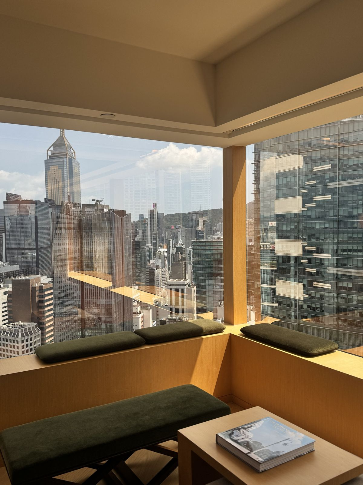
- 酒店
- The Upper House
- 地址
- 香港金钟 · 太古广场 88 Queensway
- 时间
- 2026 年 10 月 · 国庆假期
- 我们
- Mr & Mrs Qu
一进房间，桌上放着一个小礼盒和一张手写卡片。
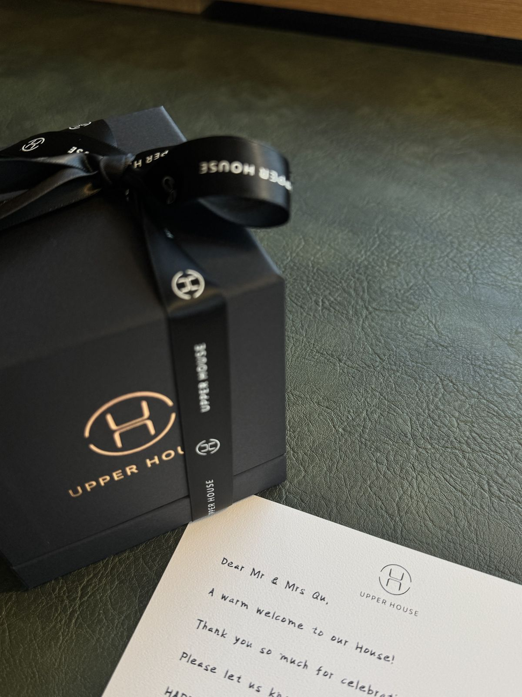
“Dear Mr & Mrs Qu, a warm welcome to our House!”
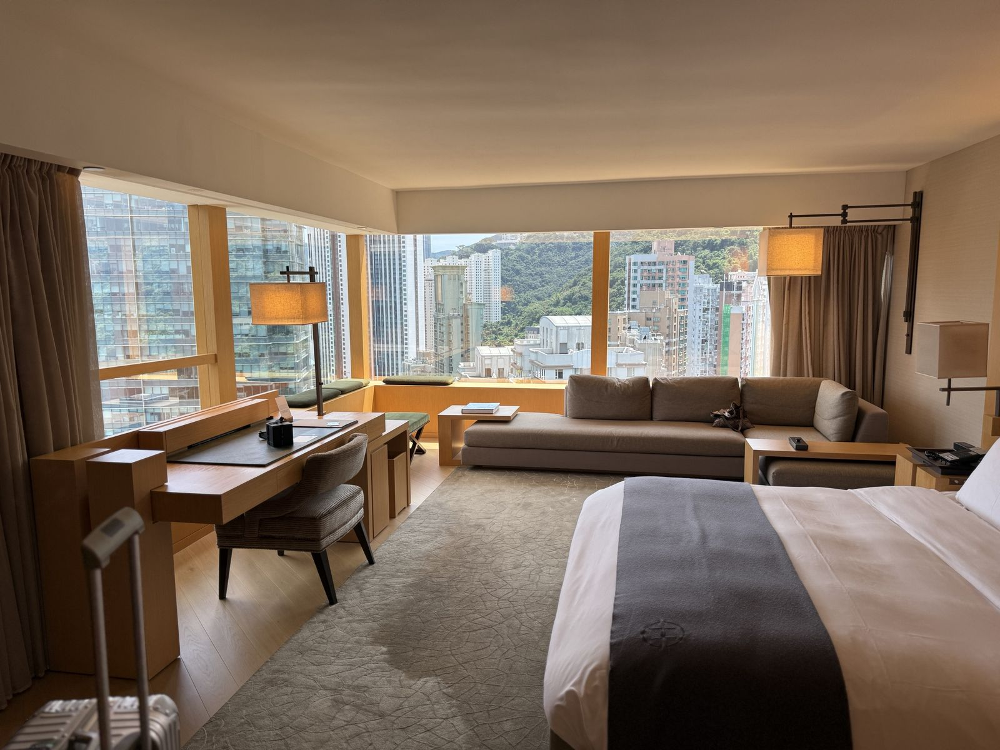
原木、灰绿和米色。窗外一半是写字楼，一半是半山的绿。
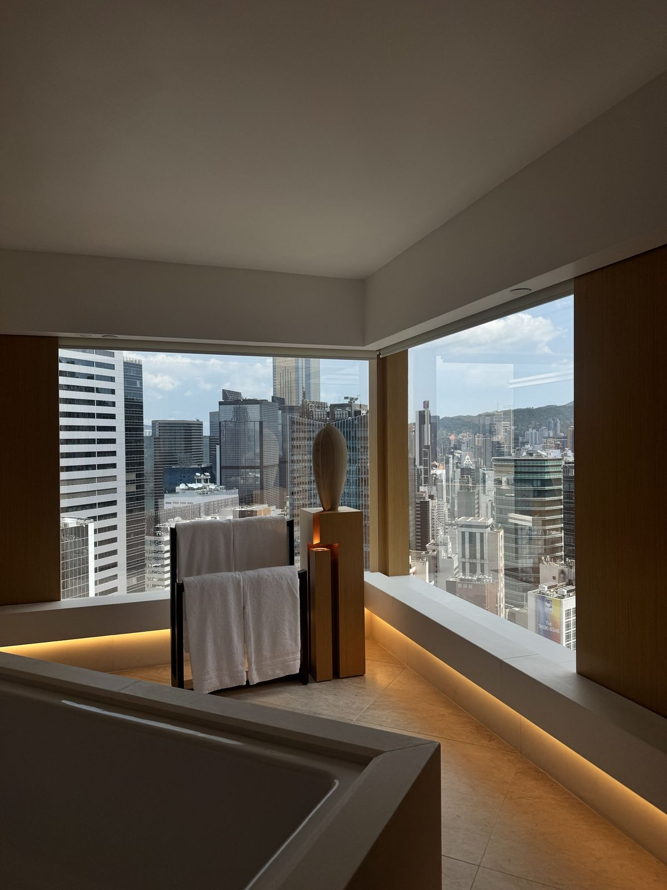
浴缸也正对着转角窗，地脚的灯带一直亮到窗边。
房间里最好的位置，是这个铺着橄榄绿坐垫的转角窗台。我们在这里坐了很久。
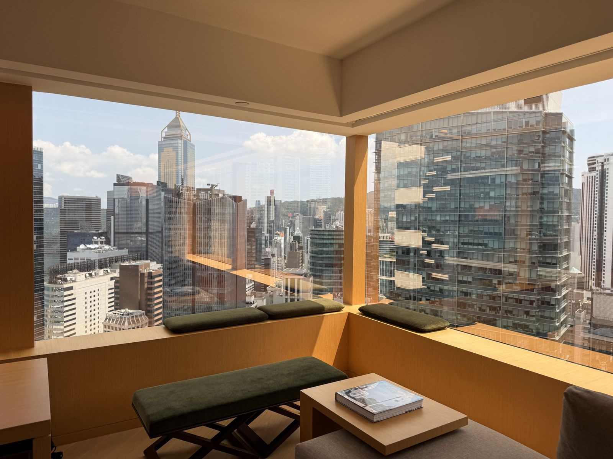
下午的阳光照进来，小桌上放着一本《Old Hong Kong in Colour》。
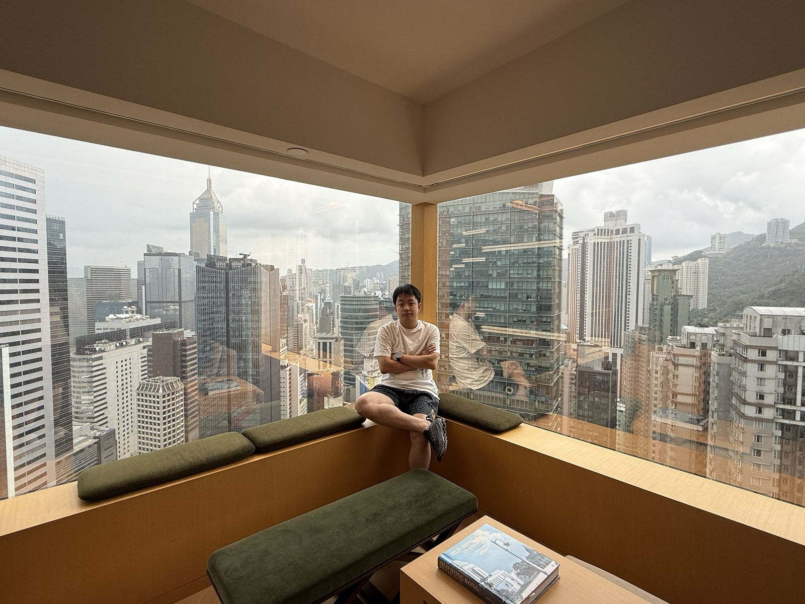
坐在窗台上，背后是中环和金钟的楼群。
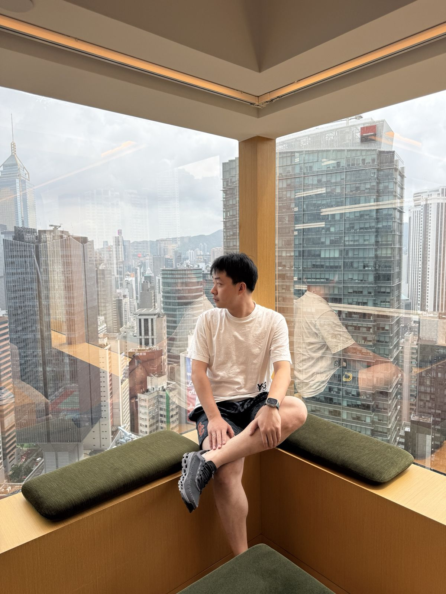
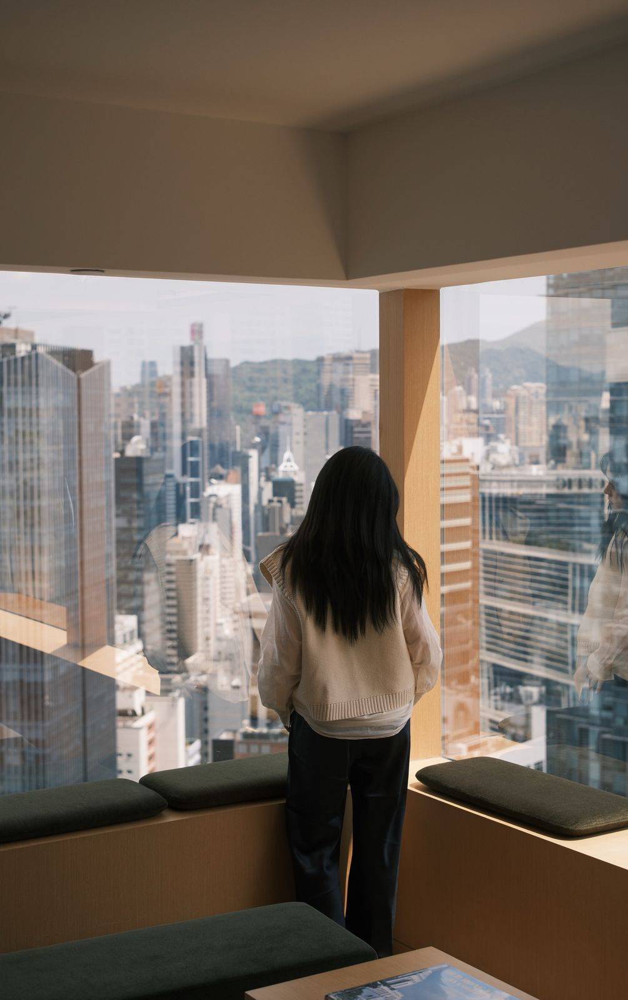
看楼，看山，看对面写字楼里还亮着的灯。
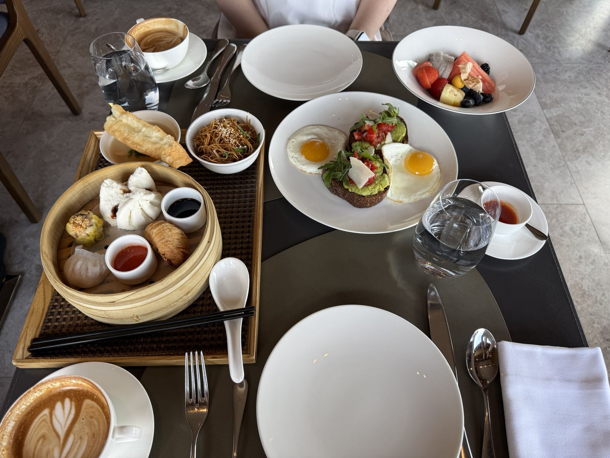
早餐一半广式一半西式：虾饺、烧卖、叉烧包、炒面和油条；另一边是牛油果吐司配两只太阳蛋，再加一碗水果、两杯拿铁。
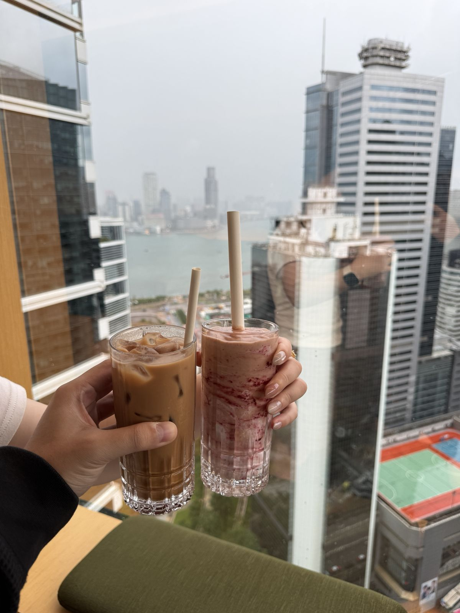
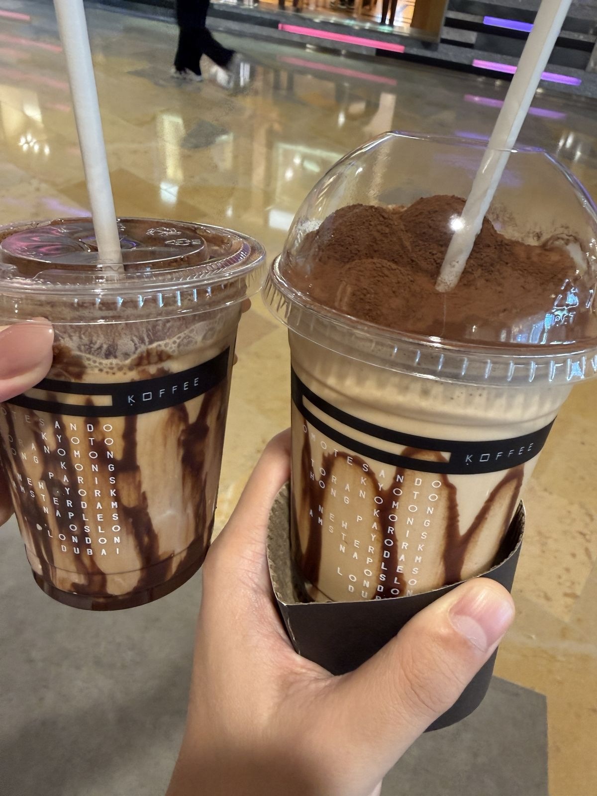
左：窗边的冻奶茶和莓果奶昔，远处是维港。右：商场里的 KOFFEE，一杯盖满了可可粉。
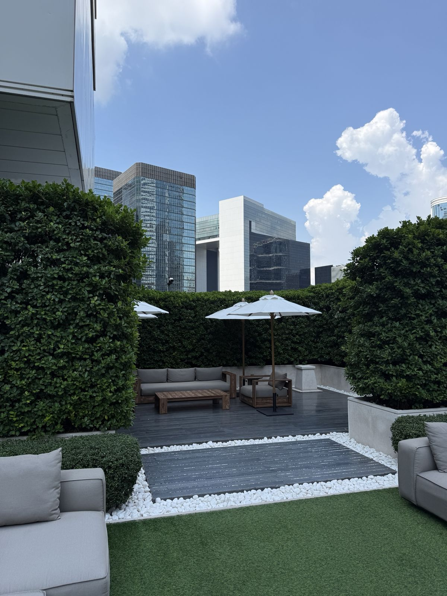
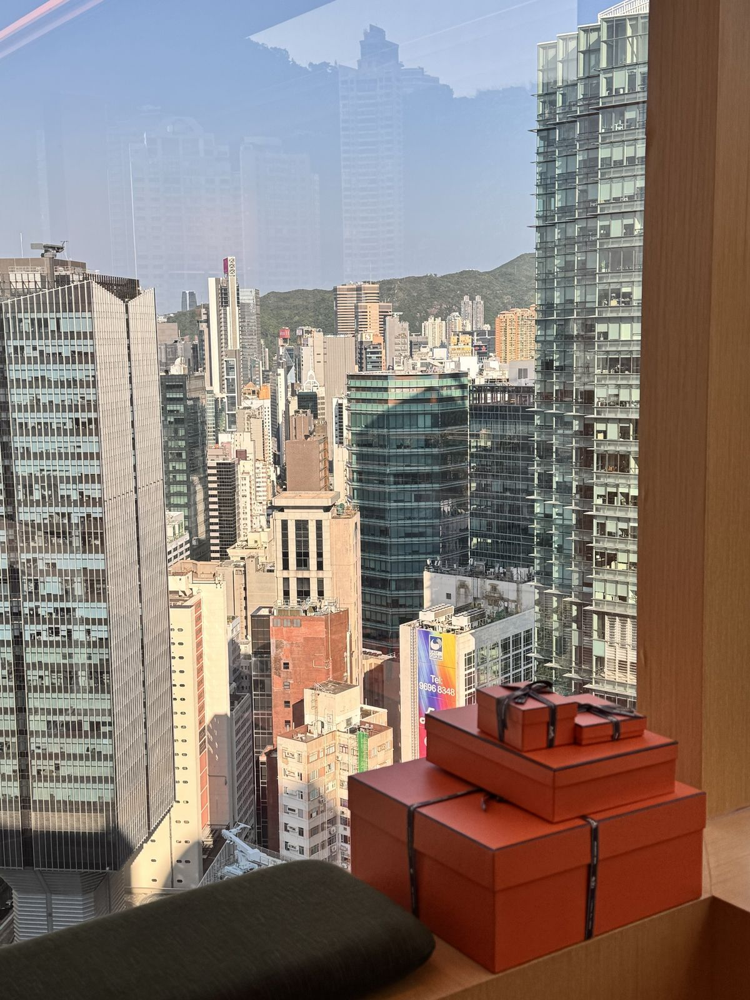
左：绿篱围起来的露台花园。右：窗台上叠着几个橙色盒子。
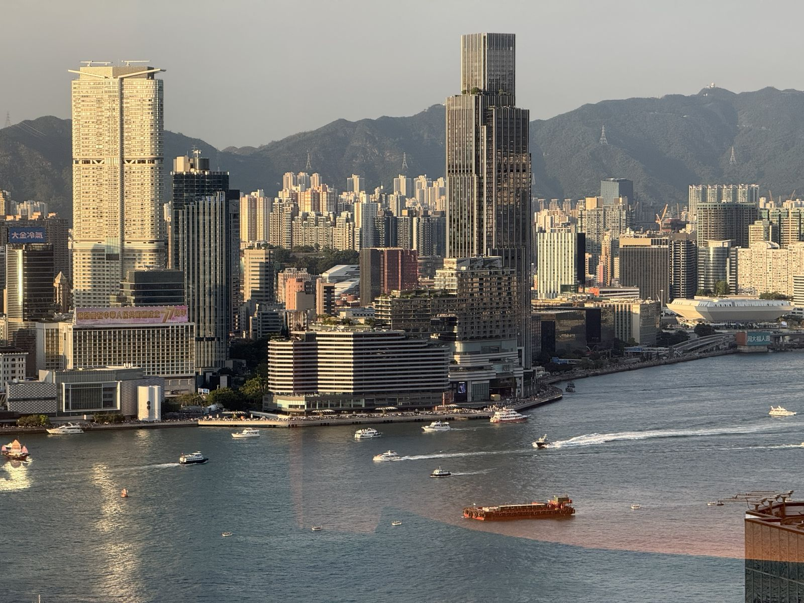
国庆傍晚，对岸尖沙咀的楼上挂着庆祝建国 77 周年的横幅，海面上的船越来越多。